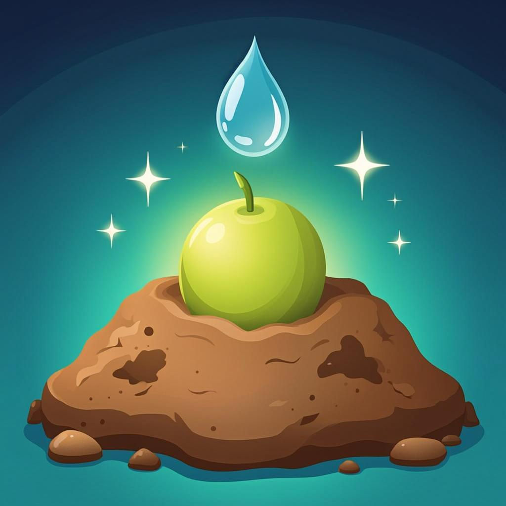
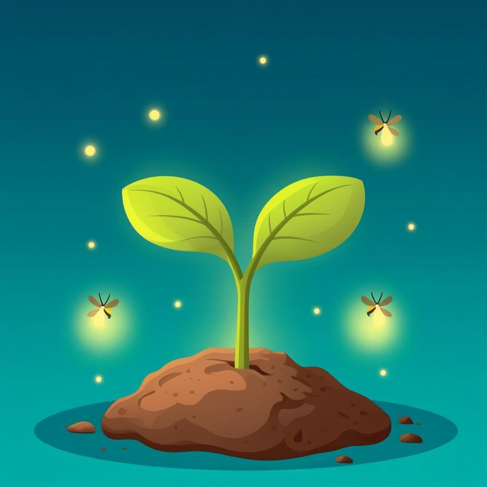
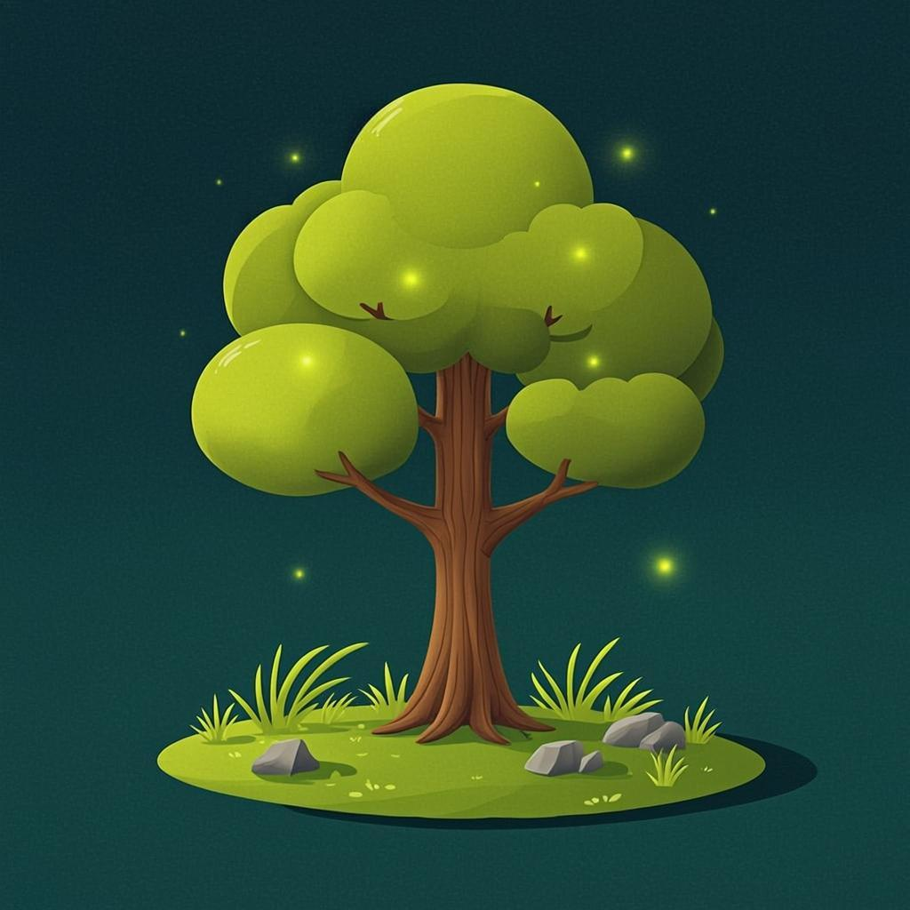
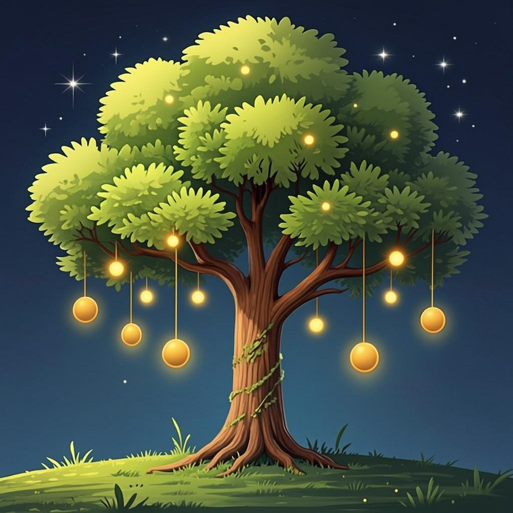
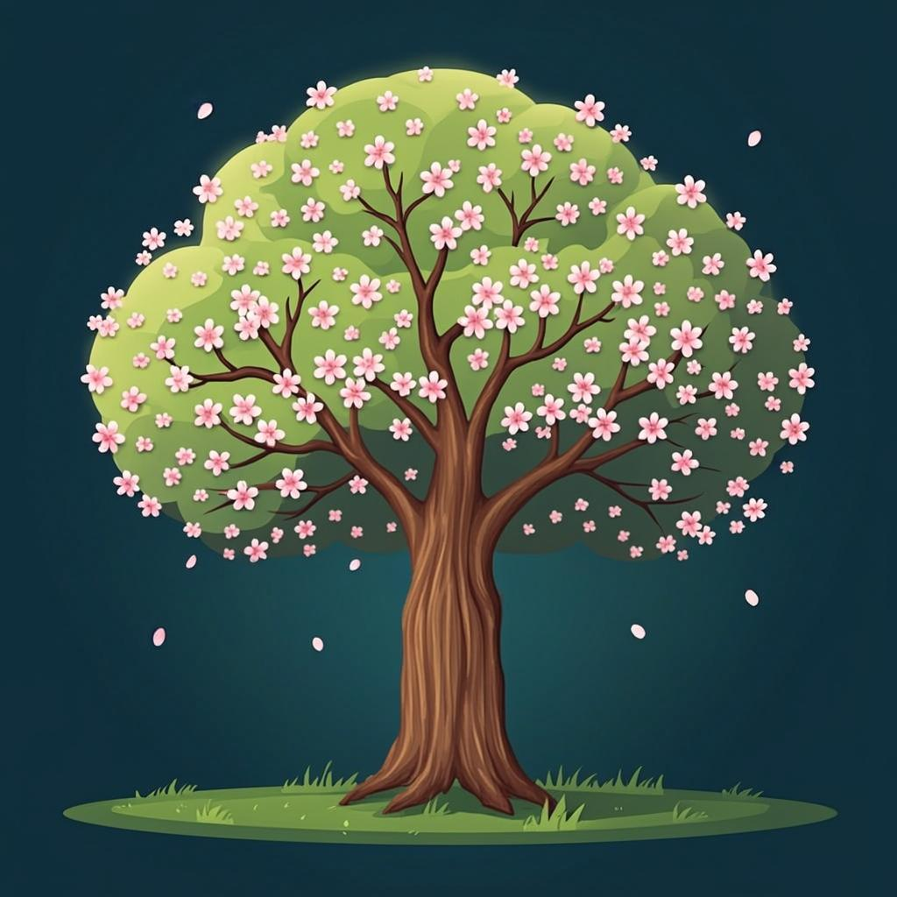
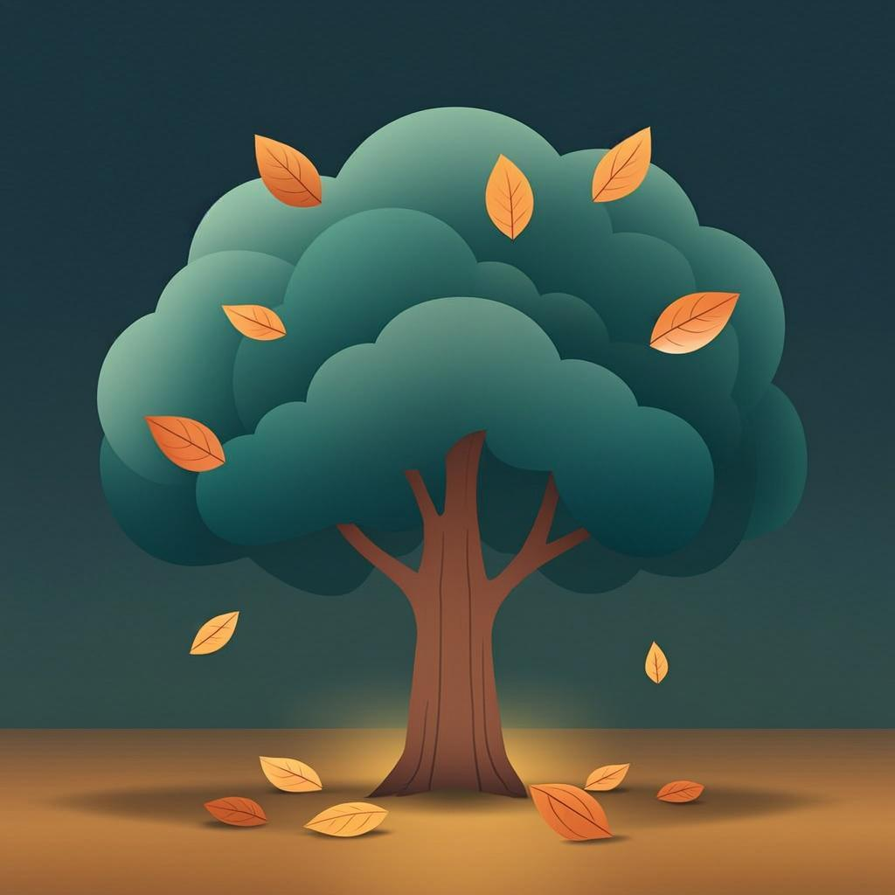
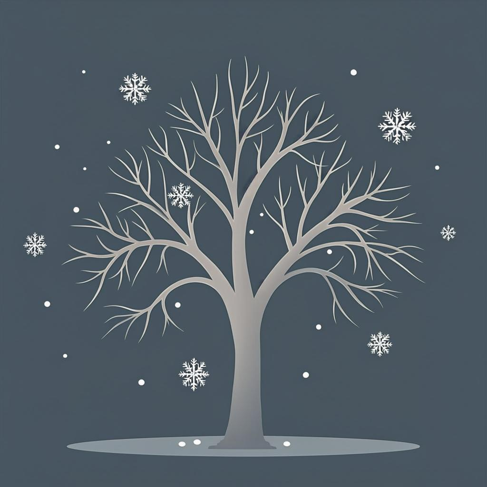
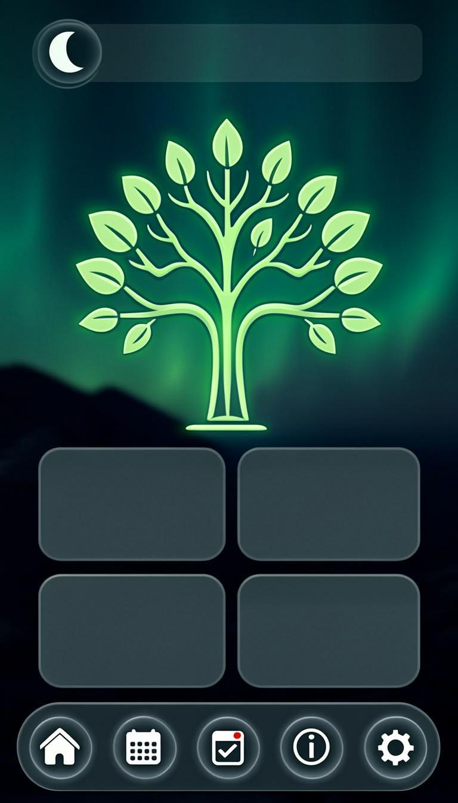
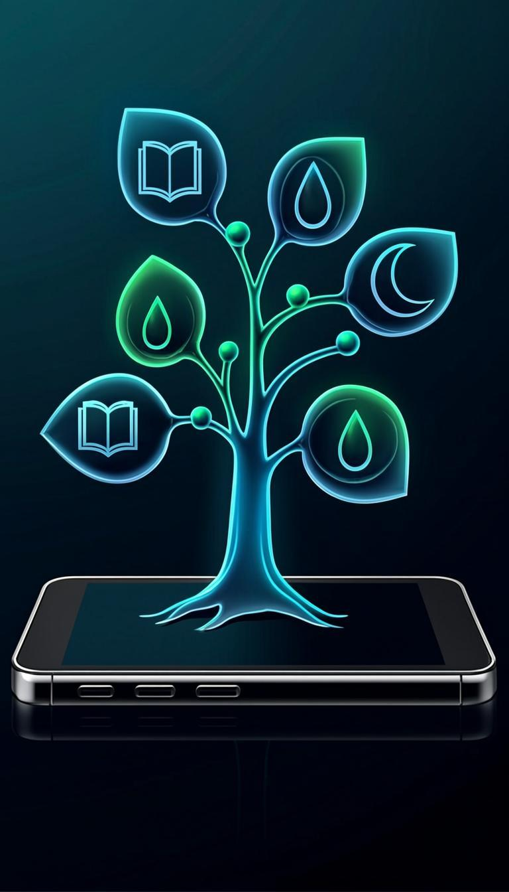
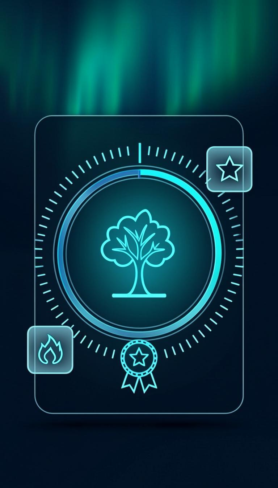

10 opsi visual untuk konsep “pohon habit” — pohon yang tumbuh dari konsistensimu, bukan dekorasi. Sesuai identitas Aurora teal Rutina.
⚠︎ Ini murni konsep ilustrasi (bukan implementasi) — sesuai permintaan “jangan buat kode dulu”.
Tahap ditentukan XP & Level yang sudah ada di Rutina. Semakin konsisten, semakin tinggi pohonmu.

Biji bercahaya baru ditanam — awal perjalanan, penuh potensi.

Kecambah dua daun dengan kunang-kunang — konsistensi mulai terbentuk.

Dua lapis tajuk mulai rapat — rutinitas mulai berakar kuat.

Tiga lapis tajuk megah. Buah emas = goal yang lulus — panen konsistensi.

Bunga bermekaran — momen “kembali bangkit” setelah lama terhenti.
Pohon tidak menghukum. Daun menguning = “ayo dirawat”. Dorman = libur resmi, tidak mati.

Beberapa daun amber gugur perlahan — habit itu sedang sering terlewat.

Ranting tenang bersalju, satu kuncup menyala — istirahat, bukan mati. Pulang = musim semi.
Bagaimana pohon bisa hidup di dalam UI Rutina — semua elemen interaktif (tap daun → habit itu).

Pohon di tengah layar utama — pengingat visual setiap buka app.

Tiap daun punya ikon habit (buku, air, bulan…) — tap untuk fokus ke habit itu.

Ring progress mengelilingi pohon — XP hari ini menuju level berikutnya, seperti splash screen.